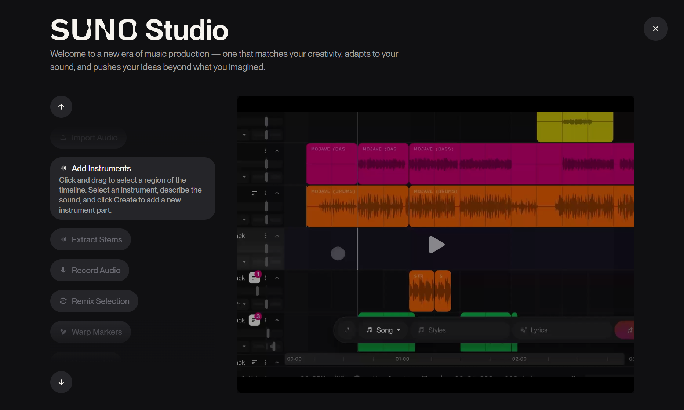

Suno AI
KI-Musik Generierung für Jedermann
Vom Text zum fertigen Song in Sekunden. Keine Vorkenntnisse nötig – einfach beschreiben, was du hören willst, und Suno kreiert den Track.
🚀 Zu Suno AI →Die Suno-Oberfläche
So einfach generierst du Musik mit KI – die 4 Schritte im Überblick
Beschreibe in Worten, welche Musik du willst
Wähle Genre: Rock, Pop, Electronic, Jazz...
Suno erstellt 2 Versionen – wähle die beste
Speichere als MP3 oder teile direkt
Suno Studio v1.2
Die erste web-basierte KI-Audio-Workstation – professionelle DAW-Funktionen treffen auf KI-Generierung.

Suno Studio Interface – Multitrack-Editor mit KI-gestützten Bearbeitungsfunktionen
Multitrack-Editor
Bearbeite Songs wie in einer professionellen DAW – schneide, arrangiere und optimiere deine Tracks.
Stem-Separierung
Extrahiere bis zu 12 einzelne Spuren (Vocals, Drums, Bass, Melodie) als WAV-Dateien.
MIDI-Export
Konvertiere generierte Melodien zu MIDI für die Weiterbearbeitung in Ableton, Logic oder FL Studio.
Add Vocals
Füge Gesang zu bestehenden Instrumental-Tracks hinzu – ideal für Karaoke oder Remixes.
Add Instrumentals
Lade deine Vocal-Aufnahmen hoch und generiere passende Instrumentierung per KI.
Inspire
Lasse dir Songs basierend auf deinen Playlists und Musikgeschmack vorschlagen.
🎯 Für wen ist Suno Studio?
Suno Studio richtet sich an professionelle Musiker, Producer und Content Creator, die maximale Kontrolle über ihre KI-generierte Musik wollen. Es erfordert einen Premier Plan (ab 30$/Monat).
Über Suno AI
Was ist Suno?
Suno AI ist ein KI-gestütztes Musikgenerierungs-Tool, das aus Textbeschreibungen vollständige Songs erstellt. Du gibst einen Prompt ein – Stil, Stimmung, Instrumente – und Suno generiert innerhalb von Sekunden einen kompletten Track mit Vocals, Instrumenten und Arrangement.
Wie funktioniert es?
Prompt eingeben
Beschreibe den gewünschten Song: Genre, Stimmung, Instrumente, Tempo
KI generiert
Suno analysiert deinen Prompt und erstellt zwei Song-Varianten
Anhören & Anpassen
Wähle die beste Version, verlängere den Song oder generiere neu
Download
Lade den fertigen Song als MP3 oder WAV herunter
Preismodell
- 50 Credits pro Tag
- ~10 Songs täglich
- Nicht-kommerzielle Nutzung
- Gemeinsame Warteschlange
- MP3 Download
- 2.500 Credits pro Monat
- ~500 Songs monatlich
- Kommerzielle Nutzung
- Prioritäts-Warteschlange
- WAV & MP3 Download
- Song-Verlängerung
- 10.000 Credits pro Monat
- ~2.000 Songs monatlich
- Volle kommerzielle Rechte
- Höchste Priorität
- Alle Download-Formate
- API-Zugang
💡 Tipp für Einsteiger
Starte mit der kostenlosen Version, um Suno auszuprobieren. Für 50 Credits täglich kannst du ca. 10 Songs erstellen – perfekt zum Lernen und Experimentieren.
Anmeldung & Registrierung
Die Anmeldung bei Suno ist einfach:
- Besuche suno.ai
- Klicke auf "Sign Up" oder melde dich mit Google/Microsoft/Discord an
- Bestätige deine E-Mail-Adresse
- Starte sofort mit den täglichen Gratis-Credits
Features
Text-to-Music
Gib einfach eine Beschreibung ein – Suno verwandelt Text in vollständige Songs mit Gesang und Instrumenten.
Verschiedene Genres
Von Pop über Rock bis zu Jazz, Klassik, EDM, Hip-Hop und mehr. Über 100 Stilrichtungen unterstützt.
Custom Mode
Volle Kontrolle über Lyrics, Stil und Titel. Schreibe eigene Texte oder lasse die KI alles erstellen.
Instrumental-Option
Erstelle Songs ohne Gesang – perfekt für Hintergrundmusik, Podcast-Intros oder Soundtracks.
Song-Verlängerung
Verlängere deine Tracks von 2 Minuten auf 4 Minuten oder mehr – nahtlos und stimmig.
Download-Optionen
Exportiere als MP3 (Free) oder WAV in Studio-Qualität (Pro/Premier) für professionelle Weiterverarbeitung.
Prompting-Guide
Wie schreibt man gute Prompts?
Ein guter Suno-Prompt ist präzise und strukturiert. Je genauer du beschreibst, was du willst, desto besser das Ergebnis.
📐 Die Prompt-Struktur
Die ideale Struktur für Suno-Prompts:
[Style] – Genre, Subgenre, musikalische Richtung
[Mood] – Emotion, Atmosphäre, Energie-Level
[Instruments] – Hauptinstrumente, Besonderheiten
[Tempo/BPM] – Geschwindigkeit (optional)
Beispiel-Prompts
"Upbeat electronic dance music, energetic, synthesizer, 128 BPM"
"Lo-fi hip hop, relaxing, piano and rain sounds, study beats, chill atmosphere"
"Epic orchestral trailer music, dramatic, strings and brass, cinematic, powerful"
"Acoustic pop ballad, emotional, acoustic guitar and piano, heartfelt vocals, mid-tempo"
Das Tags-System
Suno versteht bestimmte Tags besonders gut. Nutze diese Tags für präzisere Ergebnisse:
⚠️ Zu vermeiden
- Zu vage Beschreibungen wie "gute Musik"
- Widersprüchliche Stile ("aggressive Jazz-Ballade")
- Künstler-Namen kopieren (Urheberrechte!)
- Zu lange Prompts über 200 Zeichen
Workflow-Tutorials
Ersten Song erstellen
Simple Mode wählen
Der Simple Mode ist perfekt für den Einstieg. Gib deinen Prompt in das Textfeld ein.
Instrumental aktivieren (optional)
Setze den Haken bei "Instrumental", wenn du keinen Gesang haben möchtest.
Create klicken
Klicke auf den Create-Button. Suno generiert zwei Varianten – ca. 30-60 Sekunden Wartezeit.
Auswählen & Speichern
Höre beide Versionen an. Klicke auf das Herz, um einen Song zu speichern.
Song verlängern
Die Verlängerung funktioniert nur mit Pro-Abonnement:
- Klicke auf den Song, den du verlängern möchtest
- Wähle "Extend" aus dem Menü
- Beschreibe, wie der Song weitergehen soll (oder nutze denselben Prompt)
- Suno fügt nahtlos weitere Abschnitte hinzu
Aus MP3 einen vollständigen Song machen
Hast du einen kurzen Clip, den du erweitern möchtest?
- Lade deine MP3 bei Suno hoch
- Beschreibe den gewünschten Stil für die Erweiterung
- Suno analysiert den Clip und generiert passende Fortsetzungen
- Wähle die beste Variante und verbinde sie mit dem Original
✨ Best Practices
- Starte immer mit Referenz-Songs von Suno, um den Stil zu verstehen
- Speichere gute Prompts als Vorlagen für später
- Experimentiere mit der Custom Mode für eigene Lyrics
- Nutze die Community-Galerie für Inspiration
KI-Etikette & Rechte
Urheberrecht bei KI-Musik
Die Rechtslage bei KI-generierter Musik ist komplex und entwickelt sich ständig weiter:
- Free-Version: Songs sind für den persönlichen Gebrauch bestimmt
- Pro/Premier: Kommerzielle Nutzung ist erlaubt (beachte die aktuellen AGBs)
- Du besitzt die Rechte an deinen Prompts, nicht unbedingt an der KI-Ausgabe
- In verschiedenen Ländern gelten unterschiedliche Regelungen
Kommerzielle Nutzung
Mit einem Pro- oder Premier-Abonnement darfst du Suno-Songs kommerziell nutzen:
- YouTube-Videos monetarisieren
- Podcast-Musik verwenden
- In eigenen Projekten einsetzen
- Auf Streaming-Plattformen veröffentlichen (mit Einschränkungen)
⚠️ Wichtig
Lies die aktuellen Terms of Service von Suno sorgfältig. Die Rechte können sich ändern. Bei kommerziellen Projekten ist rechtliche Beratung empfohlen.
Verantwortungsvolle Nutzung
- Respektiere die Arbeit menschlicher Musiker
- Sei transparent über KI-generierte Inhalte
- Nutze Suno als Werkzeug, nicht als Ersatz für Kreativität
- Klone keine realen Künstler oder deren Stimmen
- Achte auf sensible Inhalte in Lyrics
Alternativen zu Suno
Suno ist nicht das einzige KI-Musik-Tool. Hier sind Alternativen für verschiedene Anwendungsfälle:
🎯 Welches Tool passt zu dir?
Suno: Beste Allround-Lösung für vollständige Songs
Udio: Höchste Vocal-Qualität
AIVA: Klassische/Film-Musik
Soundraw: Content Creation & YouTube
Boomy: Schnelle Beats für Anfänger